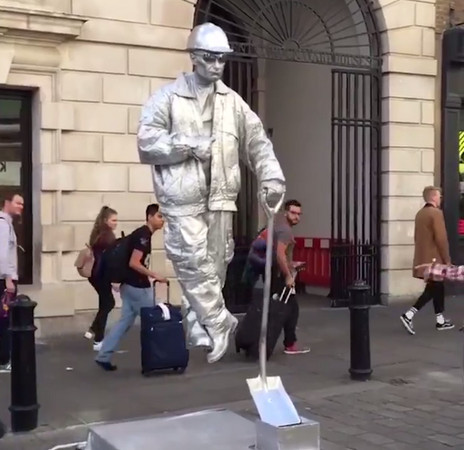
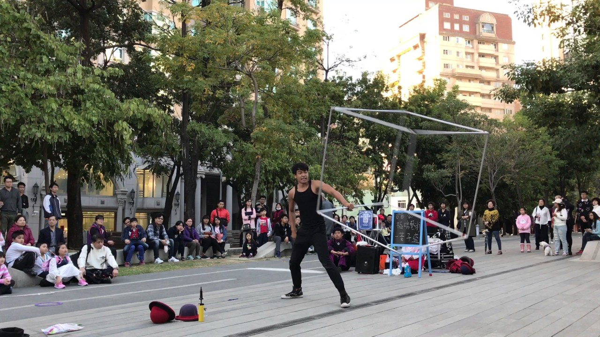

種類
身體藝術：是指以人的身體作為媒介的藝術形式。像是在路上常常看到的身體彩繪，或是把自己變得像雕像一般動也不動的，都能稱為身體藝術。雖然身體藝術也有被誤稱為「人體藝術」，但傳統習慣上，人體藝術是指展現人的赤裸軀體的藝術，與身體藝術有別。一些極端的身體藝術還包括自殘以及甚至是挑戰肉體極限，曾經就有表演者因連續跳舞至身體疲憊不堪而倒下，還有個著名作品是胸口放本書曬日光浴一直曬到書以外的部分嚴重曬傷。

現場藝術：又譯為臨場藝術或即場藝術，是一種非戲劇的表演形式。它源於視覺藝術家對傳統藝術的超越，強調當下的、現場的、真實的、不拘型式的表演，主張每個人都可以用自己特有的方式來創作。現場藝術為平時最常見的類型，時常能在各個觀光勝地看到，表演者透過一些特技來吸引眾人的目光，像是魔術、溜溜球、鋼鐵特技等各種方式都能稱為現場藝術。
